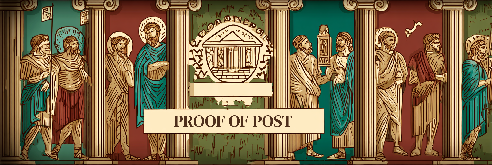

What is Proof of Post?¶
Proof of Post is a Cardano-native social media platform - essentially a Twitter-like decentralized social network built specifically for the Cardano ecosystem. It's a comprehensive social platform that combines traditional social media features with advanced blockchain integration and cryptocurrency functionality.
The Vision¶

Proof of Post represents the evolution of social media, where users can:
- Connect via Cardano wallets instead of traditional login systems
- Verify identity through on-chain ADA handles
- Monetize content through paid media and tipping
- Interact with tokens and DeFi directly within the social experience
- Maintain cryptographic proof of their posts and interactions
- Participate in a decentralized social economy built on Cardano
Core Concept¶
Unlike traditional social media platforms that rely on centralized servers and advertising models, Proof of Post leverages the Cardano blockchain to create a truly decentralized social experience where:
Decentralized Identity¶
Users authenticate using their Cardano wallets, with support for ADA handles as verified on-chain identities. This eliminates the need for traditional username/password systems and provides cryptographic proof of identity.
Content Ownership¶
All posts are cryptographically signed, providing immutable proof of authorship.
Economic Integration¶
The platform natively supports Cardano's token ecosystem, allowing users to tip creators, monetize content, and interact with DeFi protocols directly within their social experience.
Cryptographic Security¶
Every post can be cryptographically verified, preventing impersonation and ensuring the integrity of content and interactions.
Target Audience¶
Proof of Post is designed for:
- Cardano Community Members who want to connect and share within the ecosystem
- Content Creators looking to monetize their work directly without intermediaries
- Token Projects wanting to engage with their communities
- DeFi Users who want to discuss and share trading insights
- Privacy-Conscious Users seeking alternatives to traditional social media
- Blockchain Enthusiasts interested in decentralized social networking
The Difference¶
What sets Proof of Post apart from traditional social media:
| Traditional Social Media | Proof of Post |
|---|---|
| Username/password login | Wallet-based authentication |
| Centralized identity | On-chain ADA handles |
| Ad-based monetization | Direct creator monetization |
| Platform-locked content | IPFS-stored, portable content |
| No content ownership proof | Cryptographic post signatures |
| Centralized moderation | Community-driven governance |
| Fiat-based transactions | Native crypto integration |
Getting Started¶
To join Proof of Post, you simply need:
- A Cardano Wallet (Eternl, Lace, or Vespr)
- Some ADA for transactions and tips
- An ADA Handle (optional, but recommended for verified identity)
The platform handles all the complex blockchain interactions behind the scenes, providing a familiar social media experience enhanced with crypto capabilities.
Ready to explore what makes Proof of Post unique? Continue to Key Features to learn about all the platform capabilities.